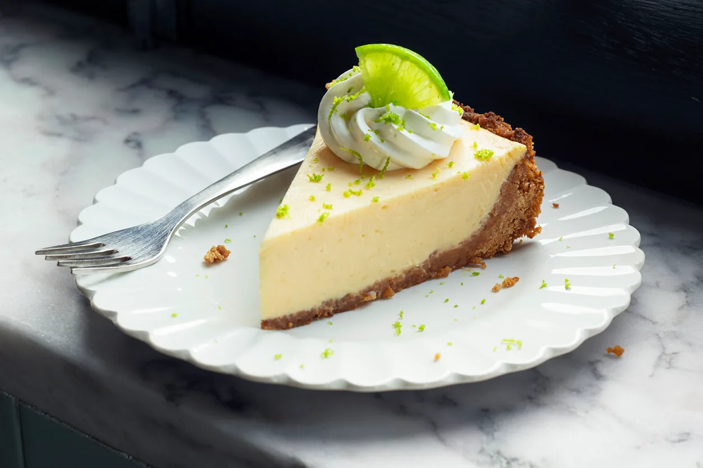

Key Lime Pie

Ingredients
- 10 graham crackers
- 1/2 cup almonds
- 6 tb unsalted butter
- 4 egg yolks
- 14 oz sweetened condensed milk
- 1/2 cup key lime juice
- 2 tsp key lime zest
- whipped cream
Directions
- Preheat the oven to 350ºF.
- Break the graham crackers into large pieces and place them
in the bowl of your food processor. Pulse several times,
until you have fine crumbs. Place the crumbs in a medium bowl.
Place the almonds in the food processor and pulse until
they are finely chopped, then add them to the crumbs.
Mix the butter with the crumb mixture until well blended,
then press the mixture along the bottom and sides of a 9-inch pie pan.
Bake the crust for about 12 minutes, until its lightly browned.
Set the crust aside.
- Place the egg yolks in the bowl of an electric mixer.
Mix on medium until the yolks are pale yellow and slightly thickened,
about two minutes. Reduce the speed to low and add the milk.
Slowly add the lime juice, then turn off the mixer and stir in the lime zest.
Pour the mixture into the pie pan and bake for about 15 minutes,
until the filling is almost set but still moist.
- Allow the pie to cool completely, then cover and refrigerate it for at least 8 hours.
Serve chilled with whipped cream, if desired.